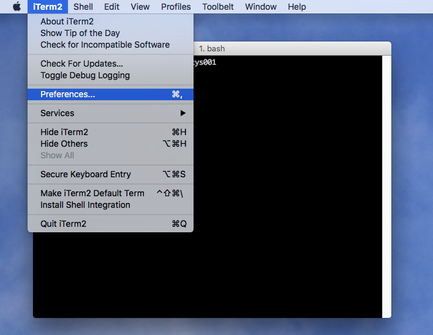

How can I turn off "scrolling the history" in iTerm2
I have installed the new iTerm 2. It asked me in a yellow bar at the top if I'd like to enable a mouse feature. Unfortunately, I don't remember the exact sentence anymore.
By accident I approved. Now when I use the scroll wheel on the mouse in iTerm, it doesn't scroll the up anymore, but instead it goes triggers the command history as if I had pressed the up-cursor.
Where I can toggle this option to turn it off again?
Answer
A few terminals, including iTerm2, have a feature where they change the
behavior of the wheel mouse when a full-screen program such as vi, or
screen or tmux is running. This happens when those programs use the
alternate screen , to provide a useful function. Normally, when using the
alternate screen in iTerm2, the wheel mouse acts like the scrollbar, scrolling
the entire screen up/down. But when this feature is enabled, iTerm2 sends
cursor up/down keys, making your command-history change.
As suggested in another comment, select the Preferences menu:

and in that, select the Advanced tab. Scroll down to the Mouse section,

and toggle the entry for
Scroll wheel sends arrow keys when in alternate screen mode
from Yes to No. You will have to restart iTerm2 for the change to take effect. (With iTerm2 v3.1.5 changes take effect without restarting.)
Suggest
If you are trapped in the scrolling history mode, you can escape by running vi and exiting. You can also choose another program that uses the alternate screen and then exit.
Scrolling the history with the mouse wheel should in theory never happen. It happens in practice because sometimes the alternate screen mode is not correctly switched back. The accepted answer solves the problem by deactivating a feature that is useful, namely scrolling in vi, less, ... with the mouse wheel or trackpad. You can keep the option from the advanced preferences:
Scroll wheel sends arrow keys when in alternate screen mode
set to yes. You will sometimes be trapped in the scroll history mode. But if you know how to escape, it's not a problem.